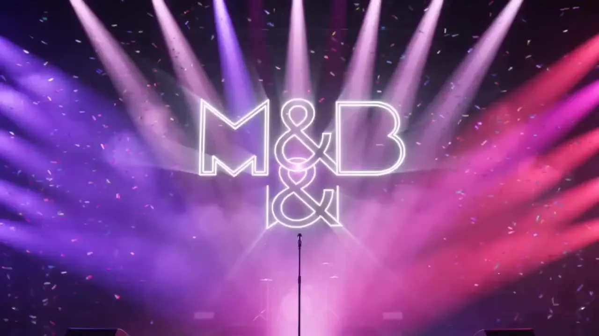
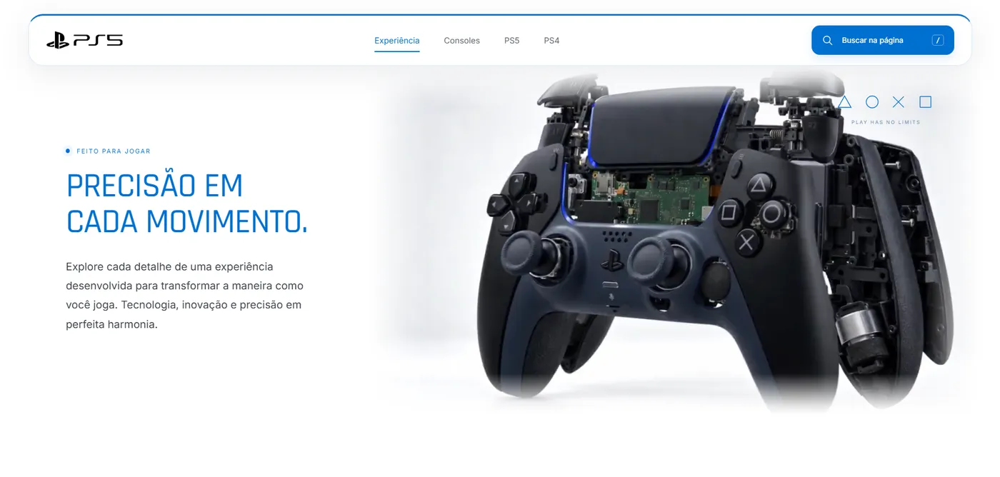
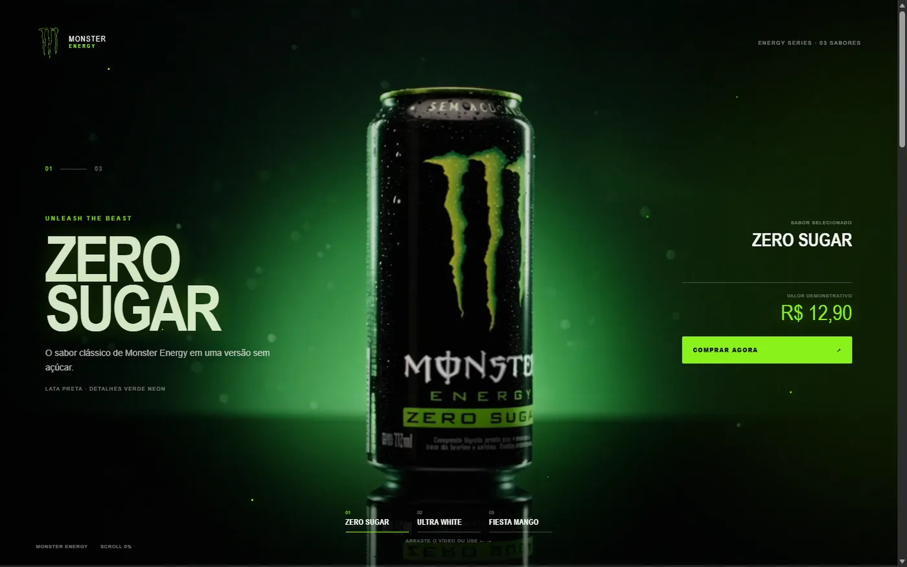
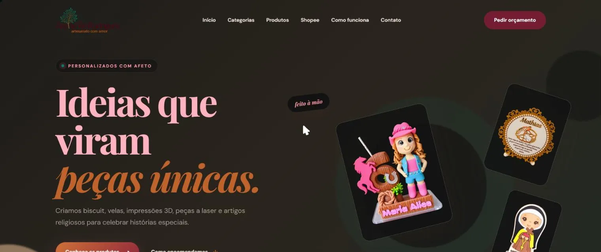

Matheus & Bella
Site para dupla musical de Ribeirão Preto: hero em vídeo, seções ao vivo, cursor customizado e um montador de orçamento ligado a uma API serverless que encaminha o pedido para o WhatsApp.
Desenvolvedor full-stack em formação. Construo do front ao back: interfaces em React e TypeScript, regras de negócio em Java e dados em MySQL — e coloco tudo no ar.
Role para explorarComecei no Exército Brasileiro, onde aprendi que consistência vence talento quando o talento não é consistente. Hoje levo essa disciplina para o código: estudo todo dia, publico o que construo e transformo cada projeto em um degrau na minha evolução como desenvolvedor full-stack.
Sou desenvolvedor full-stack em formação. No front, construo interfaces responsivas e interativas com React, TypeScript, JavaScript, HTML e CSS — páginas que contam uma história enquanto você rola.
No back, trabalho com Java, Node.js, APIs e banco de dados MySQL, além de base em redes e Linux. No projeto de extensão, desenvolvi o site do Ateliê Rerodrigues, com catálogo e checkout.
De landing pages interativas até um site em React com API de orçamento. Cada projeto foi um passo a mais em animação, arquitetura e acabamento.

Site para dupla musical de Ribeirão Preto: hero em vídeo, seções ao vivo, cursor customizado e um montador de orçamento ligado a uma API serverless que encaminha o pedido para o WhatsApp.

O vídeo de desmontagem do DualSense avança e retrocede conforme o scroll. Inclui busca interativa, filtros PS4/PS5, parallax e navegação suave.

Três sabores com paletas próprias, trocados por abas, setas do teclado ou arrasto e sincronizados com o vídeo. Termina em um checkout demonstrativo que recalcula o total pela quantidade.

Site para um ateliê de peças únicas: biscuit, impressão 3D, corte a laser e artigos religiosos, com catálogo por categoria e fluxo de checkout.
Animações de rolagem: frutas, folhas e a lata se movimentam e trocam de posição durante a rolagem.
Próximo projeto?
Todos os repositóriosInterfaces responsivas, acessíveis e componentizadas.
Regras de negócio, APIs e orientação a objetos.
Modelagem e consultas para persistir os dados da aplicação.
Base em suporte, troubleshooting e infraestrutura de TI.
Versionamento, deploy e agentes de IA no fluxo de desenvolvimento.
Formação de cabos e contato com atividades de Tecnologia da Informação. Disciplina, liderança, organização e trabalho em equipe sob responsabilidade.
Site para um ateliê de peças personalizadas — biscuit, impressão 3D, corte a laser e artigos religiosos — com catálogo por categoria e fluxo de checkout, publicado na Vercel.
Cinco projetos web no GitHub e quatro sites publicados na Vercel: de HTML e CSS puros a vídeo controlado pelo scroll e um site em React com API.
Curso e mentoria em paralelo, aprofundando back-end, banco de dados e novas ferramentas para evoluir todos os dias como desenvolvedor.
Estou aberto a oportunidades de estágio, vagas de entrada e projetos em desenvolvimento web. Se você tem uma ideia ou uma vaga, me chama.
jo4ogari@gmail.com (16) 99257-1170